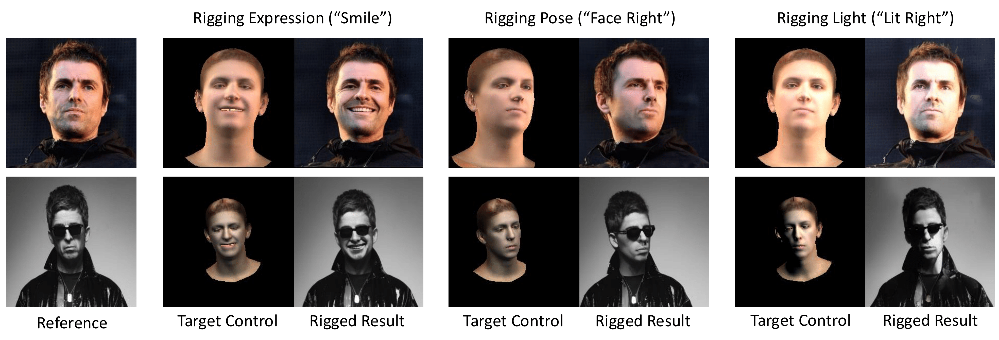
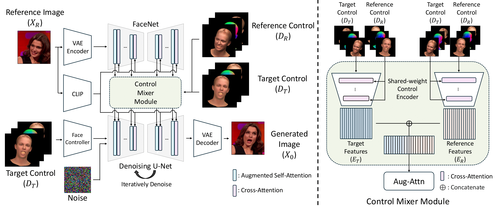

-

Paper
-
Code

Our ControlFace can edit the input face image using explicit facial parametric controls, generating realistic images without compromising the identity and other semantic details such as hairstyle.
Abstract
Manipulation of facial images to meet specific controls such as pose, expression, and lighting, also referred to as face rigging is a complex task in computer vision. Existing methods are limited by their reliance on image datasets, which necessitates individual-specific fine-tuning and limits their ability to retain fine-grained identity and semantic details, reducing practical usability. To overcome these limitations, we introduce ControlFace, a novel face rigging method conditioned on 3DMM renderings that enables flexible, high-fidelity control. We employ a dual-branch U-Nets: one, referred to as FaceNet, captures identity and fine details, while the other focuses on generation. To enhance control precision, control mixer module encodes the correlated features between the target-aligned control and reference-aligned control, and a novel guidance method, reference control guidance, steers the generation process for better control adherence. By training on a facial video dataset, we fully utilize FaceNet’s rich representations while ensuring control adherence. Extensive experiments demonstrate ControlFace’s superior performance in identity preservation, and control precision, highlighting its practicality. Code and pre-trained weights will be publicly available.
Overall Architecture
ControlFace encodes the reference image into the FaceNet and CLIP image encoder for identity and semantic preservation. For generation control, the target control is incorporated into the denoising U-Net through face controller. To enhance the control adherence, the correlated feature between reference control and target control is acquired from the proposed control mixer module.

Qualitative Results
Results on FFHQ

Results on Out-of-Domain

Acknowledgements
The website template was borrowed from Michaël Gharbi.